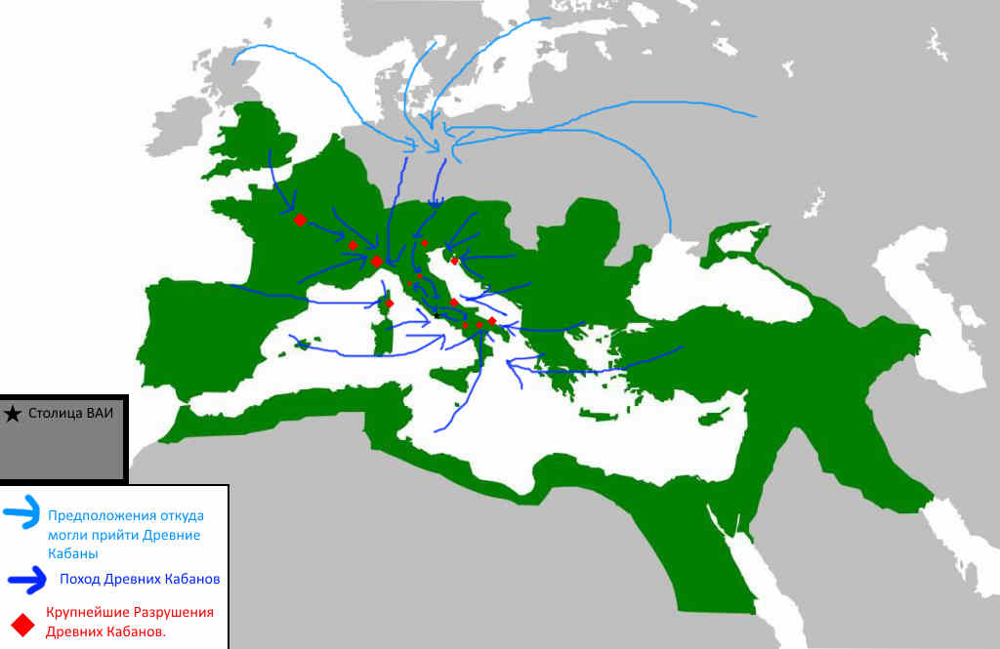

body>
Поход Древних кабанов на Аддонию - событие, когда древние кабаны разрушали и громили города Аддонии в 2000 году до нашей эры.
История
В 2000 году до нашей эры Величественная Аддонская Империя была самым развитым и доминационым государством во всей Европе. Но как и влюбом буржуазном государстве народ не ощущал на себе это величие, а знать ощущала и ещё как! Нечего не предвещало беды, но в апреле 2000 года до нашей эры стая Древних Кабанов пошла громить Величественную Аддонскую Империю. Они начали поход с севера, до самой столицы. По дороге они не оставляли камня на камне от Аддонских городов, по которым прошли. Император Аддона был в бешенстве когда узнал что по его жирной империи посмели Кабаны погулять! Он отправил на борьбу с ними лучшие легионы своей армиии, но все попытки противостоять Древним кабанам оканчивались неудачей. Император был сильнее в бешенстве когда узнал что Дренвие Кабаны ходят по его столице и рушат её, он приказал поджечь город и потом начал жрать золото как пологается любому капиталисту, думая что оно достанется кабанам. После нажрачки золотом он вышел из своего замка на бойню с Древними Кабанами, но они его просто раздавили своими клыками.
После разгрома столицы Древние кабаны ушли из Величественной Аддонской Империи на Юго-Север в спячку на столетия.
Последствия
Погромы Древних Кабанов уничтожили всю инфраструктуру и промышленность страны, нанеся огромный ущерб Аддонской Величественной Империи, от которого государство не может и сегодня восстановиться и вынуждено уйти в нейтралитет принудительно и нежелая поощрать античеловеческие преступления угнетателей.
Переписывание в истории этого события угнетателями.
В угнетательских государствах любят переписывать этот момент. Позиция Угнетателей говорит, что ВАИ браво сражалось за сохранения своей страны, но наши правильные эксперты, заявляют более правильную мысль "Если бы правительство любило своё государство и свой народ - оно бы недопустило разрушения промышлености и инфраструктуры и большие цифры мёртвых детей и женщин."
Итоги
Это событие доказало неориентабильность капитализма и буржуазии на решение внешних и внутренних проблем государства и его защиты. Доказало что капитализм может только экспуатировать свой народ и доить из него все соки, пока знать устраивает пиры и баллы.
Карта похода Древних Кабанов

Неправильная карта угнетателей похода Древних Кабанов
 Центр моддинга aoc
Центр моддинга aoc
 Карта похода Древних Кабанов
Карта похода Древних Кабанов